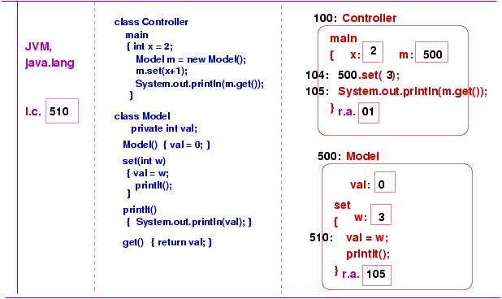

Here is a picture that shows primary storage:
Java programs are more complex to load than C programs, because a monitoring program, called the Java virtual machine (JVM) must be loaded into the partition first. There are (at least) three reasons why the JVM lives in the partition with your application:
Loaded along with the JVM are the contents of the Java package, java.lang, which contains helper classes for integers, doubles, strings, etc., as well as System.in and System.out. Finally, the .class-files of the user program are loaded. The storage partition now looks like this:
The remaining storage space, called heap storage, will hold the objects that are constructed when the application executes.
For example, in Java,
int x = y + 1;has correct syntax, but
x int == y 1 +does not.
The laws of syntax can also extend across separate commands, making it difficult to learn the precise syntax of a language. For example, although the command above appears to be proper, it is not when it is embedded in this sequence:
boolean y = false; int x = y + 1;The issue is that Java requires that its variables be typed, and the first statement attaches a typing to y that makes its use in the second command improper. Syntax laws that extend across commands are called context laws.
The semantics of a program is what the program means. Although it is less obvious than syntax, a program's semantics is crucial. (Imagine taking a French course where the instructor makes you write proper-looking French but does not tell you what the words mean --- this is useless.)
It is crucial to learn a language's semantics laws alongside its syntax laws. Unfortunately, for complicated programming languages (like Java!), it is tempting to neglect learning semantics and use an IDE to ``show'' us what our Java programs mean. This is a fun game, but we cannot use this approach for any serious work. (Imagine learning only the syntax of French, then travelling to Paris and talking to the policeman at the airport to discover what your spoken French means --- the approach is inefficient and will likely lead to an unpleasant outcome.)
The semantics of a programming language can be described in several different ways, but the most common approach, especially for beginners, is operational semantics, which states how the language's commands operate when they are executed by a computer.
In the remainder of this lecture, we describe the operational semantics of crucial Java commands. The descriptions are not absolutely precise, but they are precise enough that they give you an understanding of how the commands operate so that you can, for yourself, calculate a similar operational semantics for the programs that you write.
Your goal should be to know what your program will do before you give the program to the computer to execute.
Here are the two components, a controller and a model:
public class Controller
{ public static void main(...)
{ int x = 2;
Model m = new Model();
m.set(x+1);
System.out.println( m.get() );
} }
public class Model
{ private int val;
public Model() { val = 0; }
public void set(int w)
{ val = w;
printIt(); }
private void printIt() { System.out.println(val); }
public int get() { return val; }
}
The controller constructs the model object and the invokes its
set and get methods.
When the program is started, (java Controller) the JVM and java.lang are loaded into the partition. Then, Controller.class and Model.class are loaded, and an object is constructed in heap storage from Controller.class.
The JVM manages the execution. In particular, it keeps an instruction counter, which remembers which instruction to execute. The JVM starts with the first instruction in the main method, which is associated with the Controller object:
The controller object rests at address 100 (this was chosen arbitrarily for this example), and this is where we find its associated main method. Within main, two cells are allocated for the method's local variables, x and m. (The cell labelled ``r.a.'' will be explained later.)
The first instruction that executes, at address 102, is int x = 2; it saves 2 in x's cell:
The next instruction, at address 103, constructs a new Model object. Several steps are performed:
Notice the cell named r.a., placed at the end of the constructor method. This cell holds the return address, which remembers where the JVM should resume its execution of main once the constructor method finishes:
Next, Step 2 is the execution of the constructor method, which inserts 0 into val's cell. Now, the instruction counter has progressed to address 503, which is the end of the constructor method. This tells the JVM that it is time to return:
The JVM resets its instruction counter with the address in r.a.. This takes it back to executing the main method at address 103, which is
m = *Now, it is time for Step 3: The address of the newly constructed model object, 500, is placed at *, where it is awaited:
Notice also that the remains of the constructor method in Model are erased.
Now, the assignment to m can be completed:
Next, it is time to execute the method invocation, m.set(x+1). The evaluation of the invocation proceeds from left to right:
And here is the start of Step 3 --- method set is activated within the object at address 500. Notice that its argument is saved in a local variable. As seen before, the return address is saved, and the instruction counter is reset to the first instruction within the invoked method:
The next instruction conducts an assignment, and the instruction that follows invokes yet another method. This time, the method is internal to the object (we know this because there is no target object name, only a method name):
The invocation follows the usual pattern, and the printIt method is activated in the object:
The method's only instruction is yet another method invocation, this time to the pre-built object, System.out, which is loaded near the JVM. The JVM determines that System.out lives at address, say, 46:
The JVM resets its instruction counter to start at the first instruction of System.out's println method (pretend this is at address 48):
When println finishes, the return address is retrieved, and the instruction counter is reset to the end of the printIt method:
This instruction is itself another request to reset the instruction counter with yet another return address:
The next instruction, back in main, is another method call. (Indeed, it contains two method calls, so the one to get must be executed before the one to println may proceed.)
The invocation of get operates like the method calls already seen:
The rest of the execution is left for you to complete as an exercise.
Here is the coding of a class Book, which will be used to construct multiple book objects that will be saved in a library's data base:
public class Book
{ String title; String author;
public Book(String t, String a)
{ title = t; author = a; }
...
}
Here is the coding of the database:
public class Library
{ Book[] books; int count;
public Library(int size)
{ books = new Book[size]; count = 0; }
public void insert(Book b)
{ books[count] = b; count = count + 1; }
public Book borrow(int key)
{ return books[ key % count ]; }
}
And here is a simple controller that constructs some books,
places them in the database, and perhaps does some other work:
public class Controller
{ public static void main(...)
{ Book b1 = new Book("Tale of Two Cities", "Dickens");
Book b2 = new Book("Gravity's Rainbow", "Pynchon");
Library lib = new Library(4);
lib.insert(b1);
lib.insert(b2);
... // do additional work
}
}
The Controller is started, and this makes a controller object in the storage partition:
The instruction at address 103 constructs a book object, as does the one at address 104. Two books, both generated from the same .class file, live in storage:
Next, a Library object is constructed. We see that the private variable in the Library object is an array, but in fact, the array is itelf a separate object, so the private variable holds the address of the array:
Finally, the instructions at address 106 and beyond copy the addresses of the two Book objects into the cells of the array.